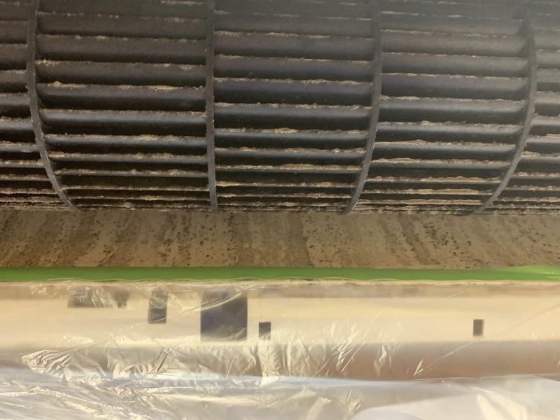
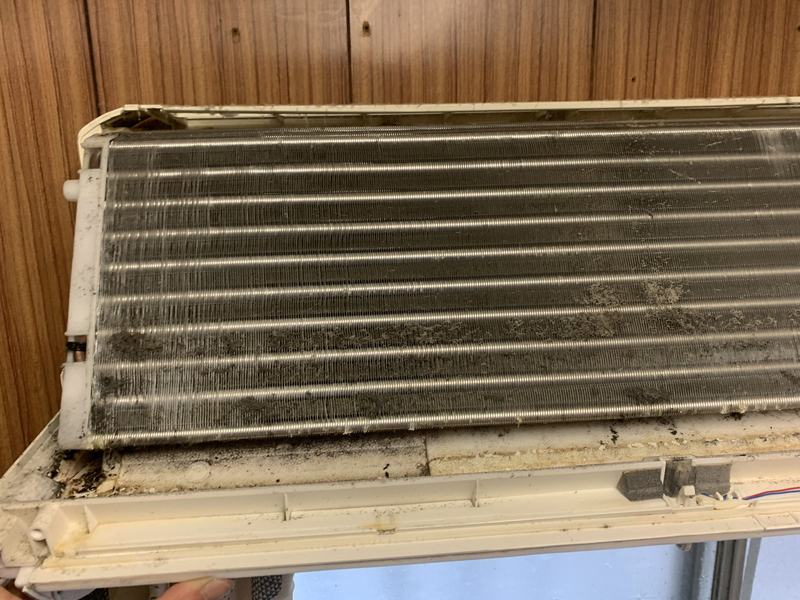

中を開けると、こうなっています
フィルターの内側は、ふだんの掃除では届きません。
送風ファン
羽根の1枚1枚にカビが付き、運転のたびに室内へ飛びます。「冷房にすると酸っぱい匂いがする」の原因はここです。


熱交換器（アルミのフィン）
ホコリで目詰まりすると、空気が通らず、設定温度に届くまで時間がかかります。


洗浄で出た汚水
1台からこれだけ出ます。365日運転の店舗では、1年でこの状態になります。


写真は当社が施工した現場のものです。お客様が特定できる部分は写していません。